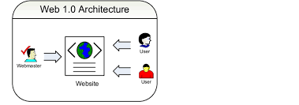
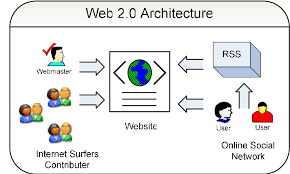
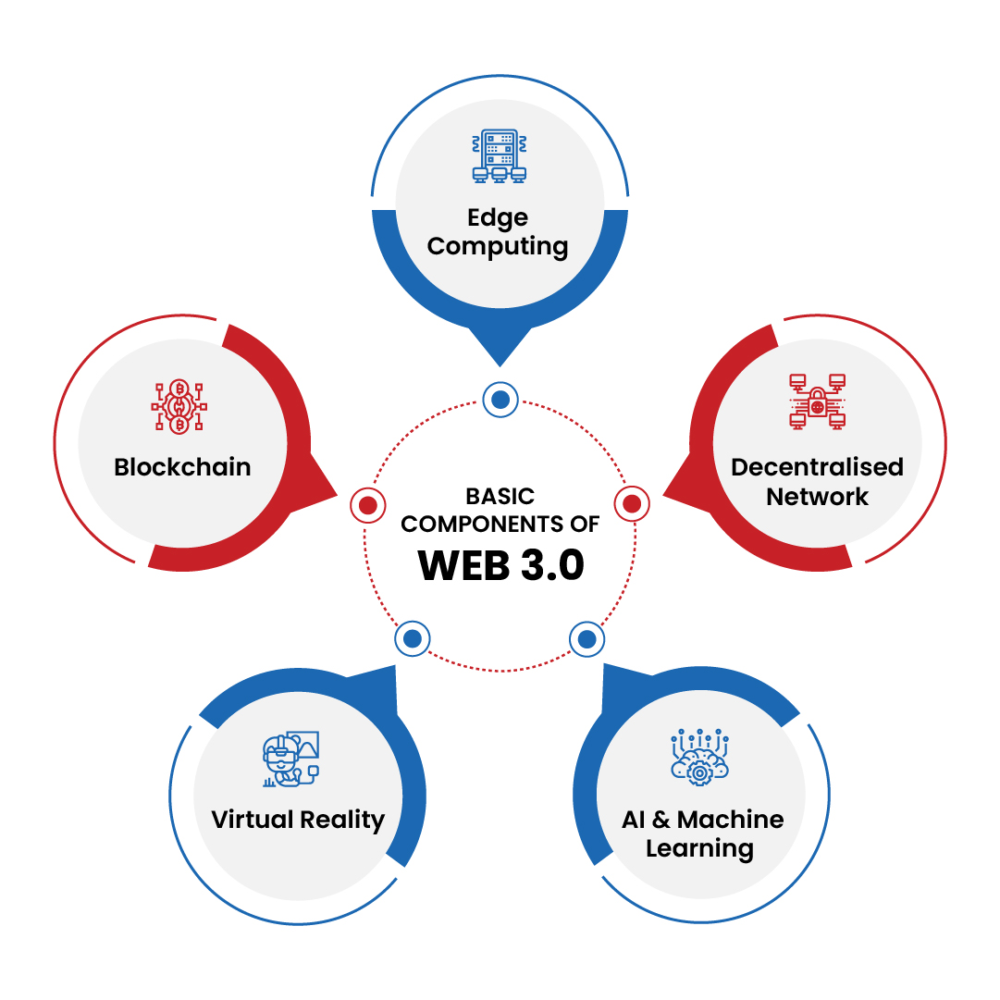
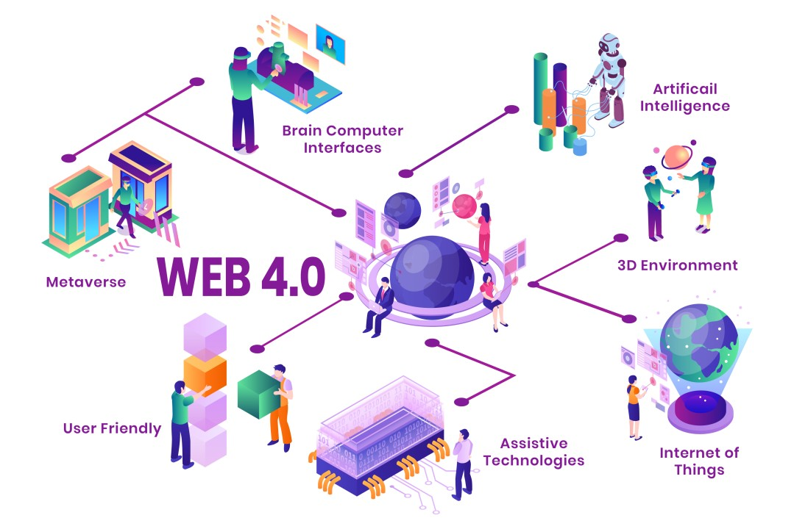

Web versions refer to the different iterations and advancements of the World Wide Web over time. The web has evolved through various stages, each introducing new features and capabilities.
Web 1.0, also known as the "static web," was the first generation of the web. It primarily consisted of static HTML pages that were read-only and lacked interactivity. Users could only consume content without contributing or interacting with it.

Web 2.0, also known as the "social web," marked a significant shift towards user-generated content and interactivity. It introduced features such as social media platforms, blogs, wikis, and collaborative tools. Users could now create and share content, connect with others, and participate in online communities.

Web 3.0, also known as the "semantic web," is the next evolution of the web. It aims to make data more interconnected and meaningful by using technologies such as artificial intelligence, machine learning, and blockchain. Web 3.0 focuses on providing personalized and intelligent experiences for users, enabling them to access information in a more intuitive and efficient way.

Web 4.0, also known as the "symbiotic web," is a speculative concept that envisions a future where humans and machines coexist and collaborate seamlessly. It is expected to involve advanced technologies such as augmented reality, virtual reality, and brain-computer interfaces, allowing for immersive and interactive experiences.
